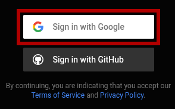
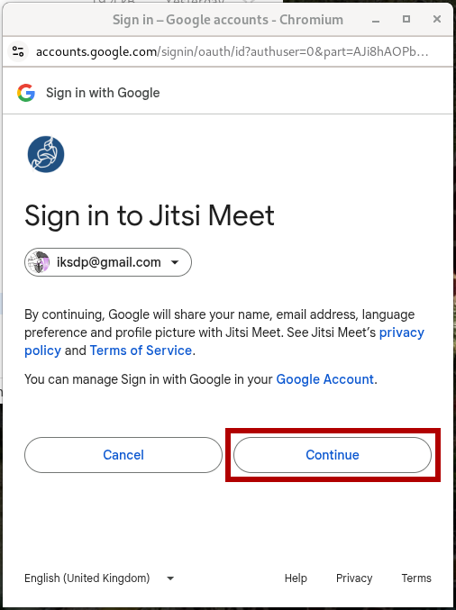
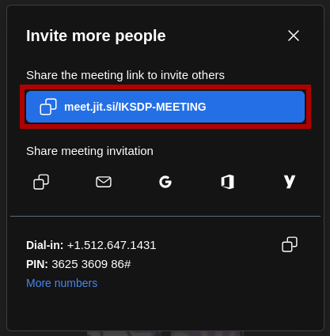

Guida utente: Creare una riunione Jitsi nel browser e invitare partecipanti
Informazioni generali
Jitsi è una soluzione gratuita e open-source per videoconferenze che può essere utilizzata direttamente nel browser. Ti consente di creare facilmente riunioni online. Jitsi offre funzionalità come la condivisione dello schermo, la chat e la possibilità di proteggere le riunioni con una password. Per creare una riunione, è necessario effettuare l'accesso. Gli altri partecipanti possono unirsi alla riunione senza un account.
1. Avviare una riunione Jitsi
Passaggio 1: Aprire Jitsi Meet
- Apri il tuo browser web (ad es. Google Chrome, Mozilla Firefox, Microsoft Edge).
- Vai al sito web di Jitsi Meet: https://meet.jit.si
Passaggio 2: Creare una nuova riunione
- Nella pagina iniziale vedrai un campo con un nome di riunione generato automaticamente.

- Inserisci un nome univoco per la tua riunione (es. "IKSDP-MEETING").

- Clicca su "Start Meeting" o premi il tasto Invio.
Passaggio 3: Concedere le autorizzazioni al browser
- Se utilizzi Jitsi Meet per la prima volta, il tuo browser chiederà l'accesso a microfono e fotocamera.
- Concedi l'accesso per poter partecipare alla videoconferenza.

Passaggio 4: Impostare il proprio nome e partecipare alla riunione
- Ora vedrai una casella di input dove puoi inserire il tuo nome.

- Puoi quindi attivare o disattivare il microfono
 e la fotocamera
e la fotocamera  .
. - Clicca sul pulsante "Join Meeting" per accedere alla videoconferenza.

Passaggio 5: Effettuare il login (Solo per il creatore della riunione)
- Ti verrà richiesto di effettuare l'accesso per avviare la riunione.
- Clicca su "Log in".

- Puoi scegliere tra diversi provider di accesso. In questa guida utilizzeremo un account Google. Clicca sul pulsante "Sign in with Google".
 - Seleziona il tuo account. Se nessun account è già connesso, dovrai accedere per la prima volta con il tuo account Google.

- Ora clicca sul pulsante "Continue".
 - Ora dovresti essere connesso con successo e la videoconferenza dovrebbe iniziare.

2. Invitare partecipanti
Passaggio 1: Condividere il link della riunione
- Clicca sull icona "Invita persone" in basso a destra.

- Apparirà una finestra pop-up con il link della riunione.
- Copia questo link e condividilo tramite email, messenger o altri strumenti di chat.

3. Durante la riunione
Controllare il microfono e la fotocamera:
- Disattivare il microfono: Clicca sull icona del microfono in basso.
- Disattivare la fotocamera: Clicca sull icona della fotocamera in basso.
Condivisione dello schermo:
- Clicca sull icona di condivisione dello schermo.
- Scegli se condividere l'intero schermo, una finestra o una scheda.
- Clicca su "Condividi".
Terminare la riunione:
- Clicca sull icona del telefono rosso per uscire o terminare la riunione.
Suggerimenti aggiuntivi
- Usa la chat (in basso a sinistra) per appunti o link.
- Se riscontri problemi di connessione, prova a passare a Google Chrome.